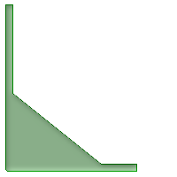
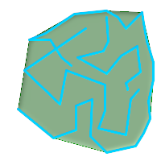
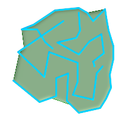

名前
ST_ConcaveHull — 全ての入力ジオメトリの頂点を囲むことができる凹多角形のジオメトリを計算します。
概要
geometry ST_ConcaveHull(geometry geom, float target_percent, boolean allow_holes = false);
説明
ジオメトリの凹包は入力ジオメトリを囲む凹多角形のジオメトリを表現します。返り値は単一のポリゴン、ラインストリングまたはポイントです。任意引数allow_holesをTRUEに指定しない限り、穴を持ちません。
凹包はジオメトリ集合の収縮包装で得られるジオメトリとみることができます。ジオメトリの周囲にゴムバンドをかけたような凸包と違う点です。凸包より計算時間がかかりますが、一般により小さい面積で、より入力ジオメトリに対して自然な境界を表現します。
target_percentは、この関数が漸近を試みる、凸包の面積の百分率です。target_percentに1を与えると、凸包と同じ結果が得られます。 target_percentが0から0.99の間では、凸包より小さい面積の結果を返します。
![[注記]](images/note.png) | |
目標割合を小さくすると、凹包処理が長くなり、トポロジ例外が発生しやすくなります。蓄積される浮動小数点数とポイントの数もまた多くなります。最初に0.99で実行してみて下さい。普通は非常に速く、時々凸包と同じ速さです。99%縮小ではほとんどの場合行き過ぎになるので、通常は99%縮小より良い結果になります。次に0.98で実行すると、2乗のオーダーで遅くなります。ST_ConcaveHull実行後に、精度と浮動小数点数を減らすために、ST_SimplifyPreserveTopologyまたはST_SnapToGridを使用します。ST_SnapToGridは少し早くなりますが、不正なジオメトリが得られることがあります。ST_SimplifyPreserveTopologyは常にジオメトリの妥当性を確保します。 |
集約関数ではありません。ジオメトリ集合の凹包を計算するには、ST_Collectまたは???を使います (ST_ConcaveHull(ST_Collect(somepointfield), 0.80)等)。
| |
ポイントまたはラインストリングの集合を使うには |
現実世界の例と技術面でのしっかりした説明は、http://www.bostongis.com/postgis_concavehull.snippetにあります。
Oracle 11G R2で導入された凹包のデモンストレーションに関するSimon Greenerさんの記事も見てください。http://www.spatialdbadvisor.com/oracle_spatial_tips_tricks/172/concave-hull-geometries-in-oracle-11gr2にあります。凸包に対する目標割合を0.75にした際の形状がSimonさんOracleのSDO_CONCAVEHULL_BOUNDARYで得た形状と似ています。
GEOSモジュールによって実現しています。
Availability: 2.0.0
例
-- 観察ポイントを基に感染域の見積もりを得ます
SELECT d.disease_type,
ST_ConcaveHull(ST_Collect(d.pnt_geom), 0.99) As geom
FROM disease_obs As d
GROUP BY d.disease_type;
 縮小目標割合100%にした場合の2ポリゴンのST_ConcaveHull
-- 目標縮小率を100%にした (凸包と同じとなり、縮小していません)場合の凹包で
-- 覆ったジオメトリ
SELECT
ST_ConcaveHull(
ST_Union(ST_GeomFromText('POLYGON((175 150, 20 40,
50 60, 125 100, 175 150))'),
ST_Buffer(ST_GeomFromText('POINT(110 170)'), 20)
), 1)
As convexhull;
|  凸包に対する縮小目標割合を90%にした凹包で覆われるジオメトリ
-- 目標縮小率を90%にした 場合の凹包で覆ったジオメトリ
SELECT
ST_ConcaveHull(
ST_Union(ST_GeomFromText('POLYGON((175 150, 20 40,
50 60, 125 100, 175 150))'),
ST_Buffer(ST_GeomFromText('POINT(110 170)'), 20)
), 0.9)
As target_90;
|
 凸包で覆われたL字型のポイント群
-- 42ポイントでL字型を形成するテーブルを生成
SELECT (ST_DumpPoints(ST_GeomFromText(
'MULTIPOINT(14 14,34 14,54 14,74 14,94 14,114 14,134 14,
150 14,154 14,154 6,134 6,114 6,94 6,74 6,54 6,34 6,
14 6,10 6,8 6,7 7,6 8,6 10,6 30,6 50,6 70,6 90,6 110,6 130,
6 150,6 170,6 190,6 194,14 194,14 174,14 154,14 134,14 114,
14 94,14 74,14 54,14 34,14 14)'))).geom
INTO TABLE l_shape;
SELECT ST_ConvexHull(ST_Collect(geom))
FROM l_shape;
|  凸包に対する縮小目標割合を99%としたL字型のポイント群の凹包
SELECT ST_ConcaveHull(ST_Collect(geom), 0.99)
FROM l_shape;
|
 凸包に対する縮小目標割合を80%としたL字型のポイント群の凹包
-- 凸包に対する縮小目標割合を80%としたL字型のポイント群の凹包
SELECT ST_ConcaveHull(ST_Collect(geom), 0.80)
FROM l_shape;
|
 凸包に覆われたマルチラインストリング
 凸包に対する縮小目標割合を99% (第1段階)とした凹包に覆われたマルチラインストリング
SELECT ST_ConcaveHull(ST_GeomFromText('MULTILINESTRING((106 164,30 112,74 70,82 112,130 94,
130 62,122 40,156 32,162 76,172 88),
(132 178,134 148,128 136,96 128,132 108,150 130,
170 142,174 110,156 96,158 90,158 88),
(22 64,66 28,94 38,94 68,114 76,112 30,
132 10,168 18,178 34,186 52,184 74,190 100,
190 122,182 148,178 170,176 184,156 164,146 178,
132 186,92 182,56 158,36 150,62 150,76 128,88 118))'),0.99)
|